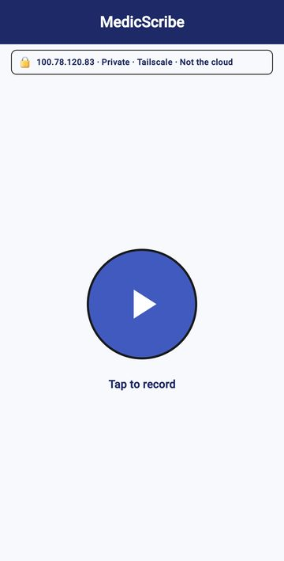
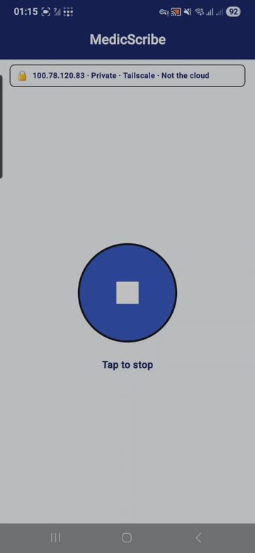
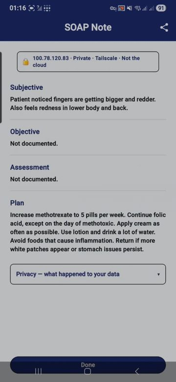
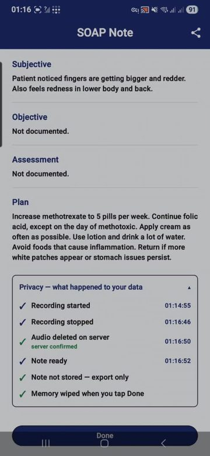

Medical Transcription AI
A private medical scribe for Malaysian clinics
by Sunkarilabs
Data Sovereignty · Zero-Cloud Liability · Specialized Medical Intelligence
What it is: a tool that listens to your consultation and writes a structured clinical note for you to review, edit, and export — so you spend the visit with the patient, not the keyboard.
Status: working and field-tested today. The screenshots in this document are from the live app.
The promise: your patients' data is sovereign — it stays on hardware you control and never touches the cloud. No third party ever holds, sees, or could leak it.
How it is delivered: a sealed, headless "black box" AI server that runs on its own — locked down, with nothing to manage and nothing to tinker with.
You press one button at the start of the consultation and one button at the end. About a few seconds after you stop, a clean SOAP note appears on your screen. You read it, fix anything you want, and share or export it.
The app is built on speech-recognition models tuned for Malaysian multilingual consultations — it handles English, Malay, Mandarin and Tamil, plus local dialects and everyday slang (Manglish), including switching between them in the same sentence — and still produces an English note.
 1. Start — one button, and a banner reminding you the data is private, not the cloud. |
 2. Recording — the button becomes Stop. Nothing else to manage. |
 3. The note — a ready SOAP note you can edit and Share. |
 4. Privacy trail — proof of exactly what happened to the data. |
In the real example above, the system captured the patient's complaint and a detailed medication plan from a two-minute conversation, and the note was ready a few seconds after Stop. The privacy trail shows the audio was deleted on the server, the note is export-only — never stored, and everything is wiped when you tap Done.
The phone or tablet does not do the thinking. It only records your voice and shows you the result. The actual work is done by two AI models running on a separate computer — the server:
Two buttons for you. Two models doing the work behind the scenes.
Most medical scribes on the market send the recording to a company's servers on the internet. For patient data, that is a permanent liability. MedicScribe runs on one dedicated machine you control — either a private Sunkarilabs server (evaluation) or a sealed server installed in your own clinic.
The AI models run on a graphics card (GPU) inside the server. This single component decides how good and how fast the notes are:
This is why the on-site standard uses a 24 GB GPU for 1–2 doctors, and the multi-doctor tier uses a multi-GPU architecture for 3–5 doctors running in parallel.
Higher accuracy or more doctors → a bigger GPU → higher hardware cost. Hardware is the lower-cost lever; bespoke model work is the premium one. We size the hardware to the clinic.
The server is delivered headless — no screen, no desktop, nothing on it to open or change. Everything runs automatically inside the box. This is deliberate:
If it ever does fail, you lose nothing. Notes are export-only and nothing is half-saved, so there is no data to lose — you simply resume the moment the server is back.
Support & SLA: your monthly licence is a direct line to the engineer who built the system — not a call-centre queue. Issues are attended to personally, on weekends included. For on-site clinics, an optional Cold-Swap hardware SLA guarantees a physical replacement server within 24 hours (see add-ons).
Three tiers, from a low-commitment pilot to a multi-doctor clinic deployment. All figures are in Malaysian Ringgit and confirmed against the final specification at quotation.
| Tier | What is included | Rate (MYR) |
|---|---|---|
| 1. Private Cloud Evaluation | A secure, encrypted private link to a dedicated Sunkarilabs server. Strictly a single-doctor pilot, 3 months maximum — to prove the value before committing to on-site hardware. | RM 1,500 / month + RM 3,000 one-time setup |
| 2. Local On-Site "Black Box" RECOMMENDED | A sealed, headless AI server physically installed inside your clinic. 100% offline — zero internet or cloud reliance. Supports 1–2 doctors. The enterprise standard. | RM 15,000 hardware (one-time) + RM 5,000 installation + RM 650 / month licence & SLA |
| 3. Multi-Doctor Clinic | A high-spec multi-GPU server built to run heavy parallel inference for 3–5 doctors simultaneously, fully on-site and offline. | RM 28,000 hardware (one-time) + RM 8,000 installation + RM 1,200 / month licence & SLA |
The monthly licence & SLA is your retainer: priority access to the engineer who built the system, software updates, and the reliability guarantee — not a charge for "updates" alone.
These extend the platform with specialised execution that generic, mass-market AI tools cannot provide.
Off-the-shelf AI models fail at specific clinical jargon. We custom-tune the underlying language models for your medical branch's focus. Example — Aesthetic & Dermatology Pack: custom weights trained to recognise laser types (Picosecond, Q-Switched Nd:YAG), conditions (Melasma, Post-Inflammatory Hyperpigmentation), and premium skincare brand names.
From RM 12,000 one-time, per specialised model.
Black-Box + Mic Bundle: a medical-grade, highly sensitive directional wireless microphone paired with a custom-anodised, silent mini-ITX server chassis — sleek on a clinic counter, and it eliminates tablet-microphone distortion.
RM 3,500 per consultation room.
Cold-Swap Guarantee (Hardware SLA): if an on-site server hits a hardware fault, Sunkarilabs physically delivers and swaps a temporary replacement server within 24 hours, weekends included.
+ RM 250 / month on the base maintenance tier.
PDPA Enterprise Audit Trail: a signed compliance certificate and a localised cryptographic logging system that proves no patient audio or text was retained on-site or leaked.
Included in Tier 2 & 3 · RM 2,000 one-time for Tier 1.
Custom EMR / CMS Webhook Integration: a secure local API endpoint that pushes generated SOAP notes straight into your clinic's existing medical-records software with one click.
From RM 5,000, quoted on your software's complexity.
The app can be supplied on both an iPad and an Android tablet. They differ only in how soon each is ready:
For the iPad/iPhone route to be trusted and encrypted, each device needs a small security certificate ("CA") installed once. After that one-time step it behaves like a normal app, and stays fully local — still no cloud. The iPad is only the recorder; the AI work happens on the server either way. App layout changes and the iOS build are delivered as a quoted app-design upgrade.
Surenther Saravanan — Sunkarilabs
Phone / WhatsApp: 014-635 7916
Email: surenthersaravanan@gmail.com
MedicScribe by Sunkarilabs — Data Sovereignty · Zero-Cloud Liability · Specialized Medical Intelligence.